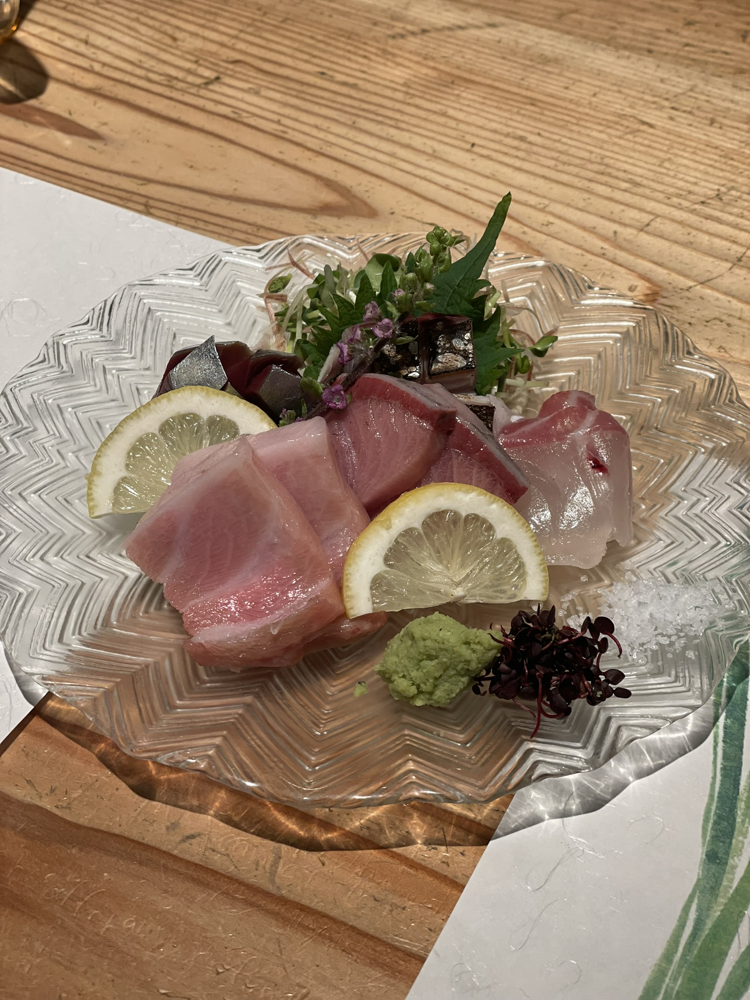
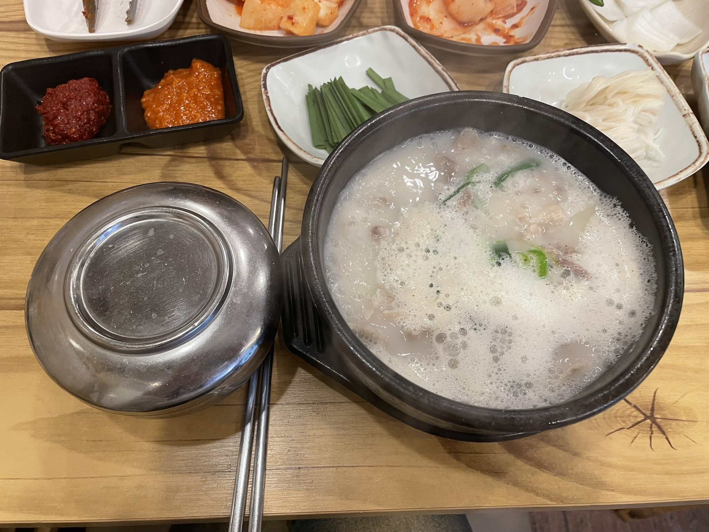

2주라는 짧은 기간동안 다녀왔지만 정말 좋은 경험이었어요!
Canada
저는 2022년에 단기 어학연수로 캐나다를 다녀왔어요! ✈️
처음으로 해외에 장기로 나가있는거라서 너무 좋은 경험이었어요. 🤩
Japan
도쿄
도쿄에 3박4일로 디즈니랜드, 아사카신사, 아키하바라를 다녀왔어요 👘
디즈니랜드에 처음 가봐서 너무 재밌었어요 🎡
오사카
작년에 오사카에 3박4일로 교토, 유니버셜스튜디오에 다녀왔어요 ⛩️

오사카에 간다면 꼭 교토에 가보세요!
그리고 숙성회를 먹어봐야해요! 회를 못먹는 저도 회가 맛있었습니다 🐟
구마모토
캐나다에서 사귄 일본인 친구를 만나러 구마모토에 3박4일 다녀왔어요🐎
일본의 소도시를 경험하기 너무 좋은 지역이었어요 🥰
구마모토는 말고기가 유명한 지역인데 소보다 부드럽고 육향이 좋아요 😋
대도시는 관광객이 너무 많지만 구마모토는 현지인들이 여행 많이 오는 도시에요!
특히 음식이 도쿄, 오사카와 달리 진짜 일본음식맛 입니다.🍜
Korea
대전
빵캉스 하러 대전에 1박 2일로 여행을 다녀왔어요. 🥖
성심당 빵이 저렴하고 사이즈도 커서 가성비가 좋아요. 👌🏻
특히 애플브리즈 라는 샌드위치가 정말 맛있어요! 🥪
강릉
장칼국수를 너무 좋아해서 강릉여행 가는걸 좋아해요! 🍜

장칼 하나를 위해서 강릉을 가기도 하고 강릉 중앙시장에 염통꼬치가 정말 맛있답니다.
김해
친구가 김해에 살아서 처음 놀러가봤어요. 🚉
김해는 사람이 별로 없어서 한적한 도시였어요.

개인적으로 부산에 비해면 구경거리와 놀거리는 없지만 음식이 정말 맛있는 지역이었어요.
부산
부산여행~~
부산~~